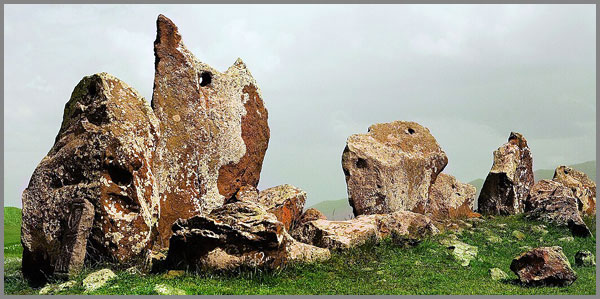

2. Քարերի Շնչով Մատնեմատ Բացված Խտացման Եզերք
 |
Լռության մեջ ապրող յուրաքանչյուր քար պահում է իր սեփական պատմությունը՝ մի լռությամբ, որը միայն մատների շոշափն է կարողանում բացահայտել։ Մատնեմատ հաշվելով, քարերի շնչից՝ Մեծ Եզերքի անլռելիությունն ու շնչառությամբ խտացված շարժումը գլորվում են դեպի այն անտեսանելի հեքիաթը, որտեղ մեր միտքն ու մատները, մեր լեզվամտածողությունն ու իմաստային հպման կարողությունը միասնաբար ծնում են մատնեմատիկան։ Այն խոսում է ոչ միայն գիտակցության խորքում թաքնված թվերի ու աստղերի մասին, այլ նաև դրա ճեղքումներում ապրող մարդուն է վերհիշում զգայական մակարդակներում։
Այստեղ մենք քայլելու ենք Քարահունջի հնագույն ճանապարհներով, որտեղ քարը դառնում է հուշ, իսկ հուշը՝ քար։ Այստեղ մատնեմատ հաշվելը հաշվարկի լեզուն է ձևավորվում, իսկ մաթեմատիկան շնչառության անջնջելի ձեռագիր է դառնում։
Հենց այսպես են ծնվում լեզվամտածողության բյուրեղները, որոնց հյութը խթանում է հոգու հանդարտ շնչառությանը՝ լռության կանոնների և թվերի ներքին ուրույն երաժշտության հարմոնիկ միասնության ներքո։ Հետևաբար՝ որքան էլ թվերը տրամաբանական խոսեն, իրականում դրանց գորովը պարզ է դառնում ինչ որ ներքին ձգողականության շնորհիվ: Երբ մենք մատներով շոշափում ենք քարը, երբ զգում ենք յուրաքանչյուր քարի մարմինը, ծնվում է մի միտք՝ աշխարհը հասկանալու ակունքումից լուսավորված։
Մաթեմատիկան՝ մատնեմատիկ լեզվի երկունքի վկան, չի մնացել սովորական իրականացույցի հրապարակում: Այն դարձել է շունչ՝ Զորության Կետի փարոսի լույսում։
Հայկական լեռնաշխարհի դեռ կենդանի հիշողությունից ծնված, իմաստի ոսկրից հյուսված այս շնչառությունը այնքան հին ու ներկա է, որ տեսնում և զգում ես քարի, մատների և լեզվի միահյուսման կիզակետը, որն էլ դարձրել է մաթեմատիկական կենդանի մարմին։
Թող այս նախաբանը լինի միայն առաջին շունչը բազմաշերտության անկյուններում թաքնված զրույցի, որտեղ քարը կփարատի մեր կասկածները, իսկ մատնեմատը կծնի նոր աշխարհներ՝ կառուցված զգացմունքների կանոնների ուրույն լռությամբ։ Մնացածը թող լինի պարզ հիշողություն՝ քայլի, շոշափման, և լսելիի չգոյության անտեսանելի եզրը մերժող, անջնջելի լռության հանգույցների մեջ թաքնված թիվ-հուշումների գեղագիտություն։
Լռության մեջ կանգնած քարը
Զորության Հոսքը՝ իր անդադար շրջապտույտի անխոչընդոտ իրականացման ընթացքը բնականոն կերպով նշագծելով անց է կացնում Զորության Կետերով, որոնք կիզակիտում և ուղղորդում են հոսքը, դարձնելով այն խիտ ու արտահայտիչ: Այդ խտության պայմաններում այն ինքնամաքրվելով ու կոհերենտանալով իր սլացքն ուղղում է դեպի իրեն հայտնի աննախադեպություն, իր ճանապարհին սնուցելով գոյի թափանցիկ ու ամենաթափանց դաշտերը:
Երբ զորության հոսքը անցնում է այդ կետերով, այն ոչ միայն խտանում է, այլև դառնում է լսելի։ Այս պահին է, որ լռությունն այլևս դադարեցնում է իր գոյությունը՝ արձագանքելով իր ներսում ձևավորված կիզակիտումներին, դառնալով լեզու առանց բառի, շոշափում՝ առանց հպման։
Այդ կետերը, որոնց մենք անվանում ենք Զորաց Քարեր, իրենց էությամբ ոչ թե նյութ, այլ զորության փարոսներ են՝ որպես հոսքի մեջ բացված լռության կղզյակներ, որտեղ ամենայն տեսանելիությունից անդին սկսում է գործել մատնեմատիկ տեսողությունը ոչ թե աչքերով, այլ մատներով, ոչ թե հաշվիչով, այլ շնչով, ոչ թե թվերի կանոնով, այլ ներքին հպման զգացողությամբ՝ որից հոսքը շարունակվում է մտքի ու մարմնի միացյալ գիտակցությամբ։
Այդտեղ՝ կիզակիտման խորքում, ծնվում է նոր որակի հիշողություն ունեցող անկաշկանդ մի հոսք, որը չի հոսում անցյալից ապագա, այլ ներկայի խորացումով բացահայտում է անհայտ տարածքներ։ Ահա այստեղ է, որ քարը շնչելով սկսում է խոսել՝ մեր մատների մեջ արձագանքելով մատնեմատիկ հաշվարկին, որը ոչ թե արդյունք է, այլ հայտնություն։
Զորության Հոսքը, երբ հանդիպում է իր կիզակիտող փարոսին, գործում է ոչ միայն որպես էներգետիկ հոսանք, այլ որպես տեղեկատվական սեղմման միջավայր, որի ներսում իմաստները ենթարկվում են խտացման։ Այդ խտացումը քվանտային երևույթների նմանությամբ վերածվում է տրոհված մաքրամաքուր դաշտի, որտեղ հնարավոր է ճանաչել ոչ միայն շարժման վեկտորը, այլ նաև դրա ներհյուսված միտում-հետագիծը։
Մեր մշակույթում այդ կետերը երկար ժամանակ դիտվել են որպես կրող-կառույցներ, սակայն դրանց դերը իրականում մեկն է՝ լեզվակառուցողական կիզակետային հանգույց լինելը, որտեղ հոսքի ուժը՝ ենթարկվելով ձևաբանական ուղղորդման, վերածվում է նախնական իմաստային-հնչյունային համակարգի։ Այստեղ հաշվելը նույնացվում է ոչ թե քանակային վերջնարդյունքի հետ, այլ իմաստային դաշտի ընկալման և գնահատման գործընթացի հետ։
Ահա թե ինչու ձեռքով հպումը, որպես զգայական օրգան-գործիք, վեր է դասվում տեխնիկական հաշվիչ մեխանիզմից։ Քարը ձեռքով հպման դեպքում դառնում է դաշտային հակազդման մոդուլ, որի արձագանքը թույլ է տալիս ճանաչել ոչ միայն նրա արտաքին կառուցվածքը, այլ նաև ներքին ներդաշնակության ռեզոնանսը։
Մատնեմատիկ հաշվարկը, այս համատեքստում, կարելի է դիտարկել որպես էներգետիկ դաշտի կոնֆիգուրացիոն սահուն սկանավորում, որտեղ թվերը դառնում են ոչ թվային ազդակների արտահայտիչներ՝ հաճախ ֆորմալ գրանցմամբ և իմաստային բարձր ճշտությամբ։
Այս ամենը հնարավոր է միայն այն դեպքում, երբ քարը դիտարկվում է ոչ թե որպես օբյեկտ, այլ խտացվող հիշողության հաղորդակ։ Նրա մեջ կուտակված է ոչ միայն պատմություն, այլ նաև լեզվամտածողություն՝ հոսքի մեջ թրծված ու տվյալ կետի մեջ կենտրոնացված։ Հենց այստեղից էլ սկսվում է մաթեմատիկան՝ ոչ թե որպես արդիության կողմից պարտադրված դասակարգման համակարգ, այլ որպես հնագույն լեզվամտածողության ներհուշային կոդավորիչ։
Մատնեմատիկ հաշվարկի մեխանիզմը, որպես գործողություն, սկսվում է ոչ թե թվային արժեքով, այլ շոշափման ազդակով, որն ունի երկակի բնույթ՝ նյութական և իմաստային։ Երբ մատը դիպչում է քարին, այն իրականացնում է ոչ միայն մակերեսային ճանաչում, այլ նաև՝ դաշտային թափանցում, որի ընթացքում մարդու ներքին հաճախականությունները հանդիպում են քարի ներքին կառուցվածքին։
Այս շփման մեջ է, որ տեղի է ունենում ինֆորմատիվ փոխազդեցություն՝ քարը արձակում է իր ներսում պահված հնագույն կոդը, իսկ մարդը արձագանքում է իմաստային հոսքով, որը փորձում է ընկալել, դասակարգել, ներդաշնակել։ Մատնեմատիկ հաշվարկը հենվում է երեք հիմնական հենասյուների վրա՝ օրգանական ռիթմից պարբերական հարցում, քարի արձագանքի բարոցենտրիկ կշռում և համադրման մեթոդով իմաստային դասակարգում։
Այս գործընթացում թվերն առաջանում են որպես բեկվող տիրույթների գնահատիչներ, այլ ոչ ի սկզբանե կանոնավոր կառուցվածքներ։ Մատը չի «հաշվում», այլ կազմակերպում է տարածքի, քանակի ու ժամանակի միկրոդաշնակություն, որտեղ թիվը ի հայտ են գալիս որպես այդ դաշնակության բեկումների շեշտադրումներ։
Ահա թե ինչու հնագույն հասարակություններում քարերի օգնությամբ հաշվարկն ու օրացուցային համակարգերը դառնում էին գիտելիքի դաշտային տեղաբաշխման օրինակներ։ Քարը՝ իր զանգվածով ու մեծ չափերով, անփոփոխության մարմնավորումն է դառնում, իսկ ձեռքը շարժուն ու զննող՝ որոնող գործիք։ Մատնեմատիկ գործառնությունը դրանց միաձուլմամբ, տալիս էր մի համակարգ, որը չի պահանջում գրանցում, այլ պահանջում է կենդանի գնահատում։
Այսպիսով, եթե դասական մաթեմատիկան շեշտը դնում է հաշվարկի արդյունքի վրա, ապա մատնեմատիկան՝ հաշվարկի ընթացիկ որակի վրա, որտեղ շոշափման, ընկալման և զգայական ինտեգրման գործառույթները միահյուսված են բանական հնչողությամբ։ Եվ հենց այստեղ է, որ քարերի շունչը դառնում է լուռ ակորդ՝ մատնեմատիկ երաժշտության ներսում: Թվերը հնչում են ոչ թե ձայներով, այլ ներհայեցողությամբ։
Քարի դաշտային օրգանիկան, որին ձեռքն արձագանքում է ոչ միայն ֆիզիկապես, այլ երևակայական հիշողության հոսքով, դառնում է այն հանգույցը, որտեղ թվերն այլևս հաշվելու համար չեն, այլ գնահատելու, որոնք ուղղորդում են ժամանակի և տարածության գիտակցական դինամիկան։ Այստեղ է, որ մեր մտածողության ոչ լիովին ձևավորված էությունը, սկսում է տեղաշարժվել թվերի և լռության միջև՝ ծնհուշի հորձանուտի մեջ, ուր ամեն քար չի կանգնում պարզապես որպես բանի մաս, այլ դառնում է տեղայնացված Զորության Կետ, որն ունի հիշողություն, դիրք և դաշտ։
Այս հորձանուտը իր կենտրոնախույս մղումներով, մատնեմատիկայի համար ծառայում է որպես մոդուլային հենք, ուր ցանկացած չափում կամ հարաբերություն ենթարկվում է ոչ միայն տրամաբանական հիմնավորման, այլ լռության ռեզոնանսին՝ արձագանքելով զորության կետի լույսին։ Այս կերպ քարը դառնում է հուշ-մարմին, մատը՝ շունչն արձանագրող շոշափիչ, մարդը՝ միջդաշտային հղորդակ, իսկ ծնհուշը՝ լեզվամտածող հորձանուտ, որի ներսում ծնվում են հիշողության թվերը, հպման լարերը, և գոյացման հստակեցումները։
Քարի դիրքը որպես բանաձև
Քարահունջի քարերը պատահական չեն դրվել։ Դրանց գտնվելու վայրերը ժամանակի մեջ սառեցված որոշումներ են՝ ընդունված լռությամբ, լույսով և խտությամբ: Դրանք ոչ թե քմահաճ բեկորներ են, այլ ձևակերպված ներկայություն՝ Զորության Հոսքի տվյալ հատվածում արձանագրված մուտք, հանգույց, կամ դարպաս։ Այս կերպ ձևավորվում է քարի բանաձևը, որը չունի միայն երկրաչափական բովանդակություն։ Այն համադրում է դաշտայնության, շնչառության, նշանակության և հիշողության շերտեր:
Յուրաքանչյուր քար՝ իր դիրքով, չափով, տեղակայմամբ, նույնիսկ լռությամբ, ներգրավված է համադրական հուշաշարքի մեջ, որը մատնեմատիկ համակարգում ընթեռնելի է որպես շեշտված կետ՝ տարածության մեջ մոդուլացված։
Քարը նույնքան կոդ է, որքան նյութ։ Նրա դիրքը նշագրություն է, իսկ նշագրումը՝ հոսքի ընթեռնելի ռիթմ, որն ընթանում է բանաձևի ճշգրտությամբ, բայց ոչ թվային արտահայտությամբ։ Քարի կեցությունը միտված չէ չափվելու, այլ՝ ընկալվելու։ Ուստի երբ մենք շարժվում ենք Քարահունջում՝ մենք մուտք ենք գործում բանաձևային համակարգ, որտեղ քարի տեղը միաժամանակ հիշողություն է, ուղղություն, զորության բացում է և մտածողության հոսքից տրված մատնեմատիկ արտահայտություն։
Մատնեմատիկան որպես շոշափող տրամաբանություն
Մատնեմատիկան հաշվարկ և լեզու չէ սովորական իմաստով։ Այն շոշափող տրամաբանություն է։ Նրա եզերքը հասնում է այնտեղ, որտեղ թվերն այլևս ոչ թե հաշվում, այլ բնութագրում են, լսվում, զգացվում են մատների ծայրով։ Մատնեմատիկան այն է, երբ լռությունը դառնում է չափելի առանց թվաբանության, հպումը՝ առանց շոշափելիքի, իսկ զգացողությունը՝ առանց վերլուծության։
Այս համակարգը կառուցվում է ոչ թե վերացական բանականության, այլ՝ գեղագիտական ընկալման միջոցով։ Այստեղ թիվը գեղակերտ բանաձև է, իսկ հաշվարկը՝ գնահատող կառուցում։ Մատնեմատիկան չի ենթադրում ժամանակի գծային ընթացք։ Այն գործառվում է մեկ այլ տրամաբանությամբ՝ կետային համադրության, հիշողության զարկերակման և զգացողության տարածման ներհոսքային ազդակ-չափումներով։
Այսպիսի մատնեմատին բնորոշ չեն «միավորի» և «մեծության» դասական չափումները։ Նրա պարագիծը ծավալահոսքային է, բայց ոչ գծային։ Ու հենց այդ պատճառով նա կարողանում է պարունակել օբյեկտի կեցության այնպիսի շերտեր, որոնք բանական դիտարկման համար դեռ անհասանելի են։
Այսպիսով, երբ մենք խոսում ենք մատնեմատիկայի մասին, մենք ոչ թե գյուտ ենք անում, այլ վերապրում ենք մեր մատների հիշողությունը, այն՝ ինչ լեզուն դեռ չի ձևակերպել։ Իսկ երբ ձեռքը դիպչում է քարին, ծնվում է միտք-շոշափում, որտեղ խտանում է ողջ տիեզերքը։
Թվերը որպես հիշողության հոսք
Թիվը հուշ չէ՝ այլ հիշողության հոսք։ Այն ապրում է ոչ թե ճշգրտությամբ, այլ հետագծով։ Երբ ասում ենք «թիվ», մենք չենք մատնանշում քանակ, այլ՝ դիսկրետ անցում այդքան շոշափելի պահերի միջով։ Թվերը միաժամանակ հոսող, տարածվող և ներքուստ կրկնվող շարժումներ են, շերտավոր հուշեր։
Քարերի դիրքը, որոնք կրել են ժամանակի շնչառությունը, միայն թվերով չեն կարգավորված։ Նրանք հիշում են ըստ այն հոսքի, որն անցել է նրանց միջով։ Քարե հուշակոթողը թիվ է քարի հիշողության մեջ, որ ձայն չունի, բայց կշիռ ունի։ Քարահունջում կանգնած թիվը՝ քարը չէ, այլ նրա դիրքից հուշված ուղղություն և մատնեմատիկ կերպով դրա ներսում ապրող իմաստային համակարգ։
Այսպիսով՝ թիվը դառնում է շունչ, շունչը դառնում է հոսք, հոսքը դառնում է հուշի մատնեմատիկ պատկեր։ Ահա թե ինչու մատնեմատիկայով խոսելիս՝ մենք չենք հաշվարկում, մենք հուշարկում ենք։ Մենք հետ ենք բերում ոչ թե տվյալը, այլ՝ ներսից եկող մի զգացողություն, որն արտահայտվում է թվի միջոցով։
Թիվը մարմին չունեցող քար է հիշողության մեջ կանգնած։ Եվ հենց այստեղ է, որ լռությունը դառնում է միակ լեզուն թվերի ներքին իսկությունը բացատրելու համար։
Լռության մեջ կանգնած քարը ոչ թե պարզապես առարկա է, այլ՝ լռության մարմնացում։ Նրա լռությունը ճնշող չէ, այլ զորավոր։ Այդ լռության մեջ կա հիշողություն, որը չի աղաղակում, այլ ուղղորդում է։ Քարն ուղղություն է լուռ տեսողության, որից տեսնում ես ոչ թե աչքերով, այլ հիշողությամբ։ Նրա վրա նստած ժամանակն ու լռությունը դարձել են այն միջավայրը, որտեղ թիվը շունչ է քաշում հանգստացած։ Քարը չի փորձում խոսել, նա թողնում է, որ իրեն կարդան ձեռքով, մատներով, զգացողությամբ, ըմբռնումով։ Երբ մոտենում ես քարին՝ այն չի ձգում քեզ, այլ սպասում է լուռ կանգնած այն բանի միջակայքում, ինչ եղել է և դեռ պիտի լինի։
Քարը դառնում է այն եզրը, ուր գոյությունը խտանում է։ Ու այդ խտացման մեջ թիվը շնչում է ոչ թե որպես աբստրակցիա, այլ որպես կենդանի հիշողություն։ Քարը լռությամբ մատնանշում է՝ ուր պիտի նայես և ինչպես զգաս, որ ճշգրտության փոխարեն խորություն, մեխանիկականի փոխարեն՝ ներշնչանք գտնես։ Ի վերջո, լռության մեջ կանգնած քարը իր շնչով, իր խամրածությամբ կամ փայլով, մեզ հիշեցնում է մի բան՝ որ մաթեմատիկան իրականում լռությամբ գտնելու արվեստ է, որում մենք չենք հորինում թվային հաշվարկներ, այլ կառուցում ենք արդյունք բանաձևերից՝ որպես գեղագիտական կերպարներ:
Ես մաթեմատիկ եմ, որովհետև հիշում եմ։
Ոչ թե գիտեմ, այլ լուռ զգացել եմ։
Ոչ թե հաշվել եմ, այլ միացել եմ հաշվարկի շնչին:
Տիեզերքին հպվելու ձևը
Երեկվա համար դեռևս ֆանտաստիկ, բայց այսօր արդեն իրական, արագընթաց գնացքը անընկալելի արագությամբ սլանում էր, պատուհանից դուրս նայող՝ ներսում նստածի համար, պեյզաժը վերածելով միաձույլ հոսքի:
Ժամանակի նախնական շնչից արթնացած, Զորության Հոսքն իր խորհրդավոր ճանապարհին Զորաց Քարերի փարոսն անցնելով՝ կիզակիտվելուց ու անասելի խտացումից ինքնամաքրված, իր խելագար վազքն ուղղեց Մեծ Եզերքի անհունները՝ ստեղծելու նրա բովանդուկությունն ու էությունը, որը հետադարձ կապի մեխանիզմով խթանելով ամենաթափանց գոյի ժամանակի բաղադրիչը, տարածվել սկսեց խելացնոր թափով։
Ծնհուշի անսկիզբ ու անավարտ հորձանուտը պտտվում էր առանց դադարի՝ ոչինչ չասելով, բայց հաստատելով գոյությոան բանը։ Զորության շերտերի սեղմվածությունը, լռության մեջ, իր հոսքով հանգում է մի կետի, որտեղ առաջացած գոյածին ճեղքը չէր խախտում համահունչությունը, այլ ձև էր տալիս նրան։ Այն լինելով լարվածության խտացման հասցված հուշային պոտենցիալի բեկման տիրույթ, և հենց այդ խտությունից ծագող՝ ոչ թե տարածություն, այլ տարածման միտում էր։ Սա տիեզերքի ծնունդը գուժող արարման դինամիկան է, որտեղ մոլեկուլն ու միտքը, ճեղքումը և միաձուլումը ձևավորում են ոչ թե նյութի պատահական վիճակ, այլ՝ իմաստակիր կառուցվածք։
Այն ստեղծվեց՝ երբ լռությունը ճեղքվեց ռիթմով, երբ հոսքը դարձավ մոդուլացվող տատանում, երբ ոչ թե պարզ տարածություն՝ այլ բովանդակությամբ հագեցած տեղեկատվական կրող միջավայր ձևավորվեց։
Այս տեսանկյունից՝ Տիեզերքը առաջին տեխնոլոգիական արարքն է, որտեղ շփման ու դաշտի խտացումը ծնունդ է տվել կառուցվածքային հաղորդակցությանը։
Նա նստած լինելով շարժվող միջավայրի մեջ, շարժվում էր ներսում՝ աչքերը փակ և ձեռքով պատուհանին հենված։ Ապակին մի փոքր դողում էր, ինչպես ջուրը՝ երբ նրան է հպվում բառից առաջ ծնված թեթև քամին։ Ու այդ թեթև դողը հանկարծ սկսեց շարժվել դեպի ներս՝ ինչպես անցյալից եկող նշան, որը երբեք չի հասկացվում ամբողջությամբ, բայց զգում ես ինչպես քոնը։
Ծնեբեկվելով որպես պայթյուն և որպես անցումային բեկում, որտեղ լույսը դեռ չէր հայտնվել, բայց արդեն զգացվում էր որպես շնչի խտացում, այն չծնեց տարածություն, այլ բացեց ուղղություն՝ որով շարժվեց առաջին խտությունը գոյություն չունեցող ձևի ներքին քաշով, որպես գործողություն առանց շարժման և զորություն առանց սահմանման։
Ու հենց այստեղ, այդ ճեղքի լուսային ծալքում, ձևավորվեց Մարդը՝ ոչ որպես մարմին, այլ որպես ընկալող կետ, որի մեջ ծնեբեկվել էր ունակություն՝ ձեռքն առաջ տալու ոչ թե հպման, այլ կառուցելու քանքարով։
Այսպես հայտնվեց առաջին համաչափությունը՝ ոչ թե սահմանված, այլ զգացողությունից ծնված, որն առաջադրեց մնացածը՝ որովհետև երբ մի հոսք կարողանում է ճեղքել լռությունը առանց քանդելու այն, գոյը սկսում է ծավալվել ստեղծելով մատնեմատիկական լեցուն տարածք իր ընթացքի ողջ խորությամբ։
Նրա հիշողության մեջ մի պատկեր ծագեց։ Մանկության խաղերից մեկը՝ հինավուրց պատուհանի տակ։ Ձեռքը հպվում էր մետաղյա կեռին, առանց այն բացելու։ Ու հենց այդ հպման մեջ՝ նա զգում էր մի ամբողջություն, որ չի վերաբերվում ոչ խաղին, ոչ իրեն՝ այլ ինչ-որ մեծ համակարգի, որի էությունը ինքն էլ չէր հասկանում, բայց որն ապրում էր իր միջոցով։
Ճեղքման ծնեբեկումից հետո հոսքը չտարածվեց։ Այն չխլեց լռությունը, այլ ներդաշնակվեց դրա պուլսացիային՝ ստեղծելով առաջին ինքնազգացող ինֆորմացիոն տիրույթը։ Գործել սկսեց դաշտային կառուցվածքի սկզբունքը։
Դաշտը՝ որպես ֆիզիկական մեծություն, սովորաբար դիտվում է որպես ուժ կրող տարածք։ Բայց հոսքում այն ոչ թե ուժ է, այլ հիշողության կրիչ, որում ամեն կետ կապված է մյուսների հետ միաժամանակ տարածականորեն և իմաստաբանորեն։
Այս համակարգում պոտենցիալն արդեն չի արտահայտվում կուլոններով կամ վոլտերով՝ այլ տարածքում եղած ինֆորմացիայի խտությամբ: Սրա հիմքում ինֆորմացիոն խտությունն է, որը ոչ թե գործողություն է կորզում լռությունից, այլ ծնեբեկում է ձևի նախատիպ՝ ոչ որպես առարկայի սահման, այլ որպես վեկտորային արժեք, որը վերածվում է կորագծի, սիմետրիայի, պուլսի։ Այստեղ գործում է մոդուլացվող հոսքի սկզբունքը՝ նման քվանտային դաշտերում հայտնվող փուլային տեղաշարժերին, որտեղ տատանումը չի չափվում հաճախականությամբ, այլ՝ ձևային համաչափությամբ։ Սա է այն պահը, երբ Մեծ Եզերքը դադարում է լինել ուղղակի տարածք։ Այն դառնում է հոսքի միջոցով ճանաչելի բանաձևային բնույթ կրող մի բան, ուր համաչափությունը զգացվող է, իսկ չափումը՝ վերածվում է մատնեմատիկ գործողության։
Նա զգում էր աննախադեպ լինելիությունն այս ամենի։ Հինավուրց մի պատուհան ու նոր ապակին՝ համակարգված են նույն հոսքի մեջ։ Ու հենց այդ պատճառով՝ հպումը պատուհանին կապված չէր ներկայի հետ։ Այն կապվում էր տիեզերքի հիշողության հետ։
Նա բացեց աչքերը։ Գնացքը սլանում էր անբացատրելի արագությամբ։ Բայց այդ պահին նա դադարեց շարժվել, որովհետև երբ հպումն ամբողջական է, մարմինը դադարում է լինել միայն ժամանակի մեջ։ Այն դառնում է կետ՝ որտեղ Տիեզերքը զուգադիպաբար անցնում է ներսով։
Տեղեկատվական տեսությունն այստեղ փոխվում է: Տիեզերքը այլևս չի դիտվում որպես էնտրոպիկ փակ համակարգ։ Բացվում է մի ճեղք, որով անցնելով տեղեկատվությունը վերածվում է ոչ թե կոդի, այլ ռեզոնանսի։ Նախաձևի այդ ռեզոնանսը չի փոխանակվում հայտնի միջոցով, այլ կիրառվում է խիստ զուգադիպմամբ, մնալով հիշվող համաչափություն։ Այս պայմաններում գիտությունը դադարում է լինել պնդում, դառնալով հոսքի կազմակերպում, մարդուն դարձնելով հիշողության արձագանք և մատնեմատիկ դաշտի քարտեզագիր։ Այդ մատն արդեն չափում չի անում, այլ բացահայտում է ներկայի գեղագիտությունը՝ նյութի մեջ դեռ չգոյ՝ հնարավոր կառուցման պոտենցիալով։
Ես տիեզերագետ եմ, որովհետև ձեռքերս հիշում են երկնքի ձևը։
Համաչափությունը ոչ թե գծագրում, այլ զգում եմ նախքան հաշվարկը։
Տիեզերագետ եմ, որովհետև իմ հպումով հիշեցնում եմ տիեզերքին, թե ով եմ ես։
Եզրափակող խոսք
Երբ այս գրության ճանապարհը սկսվեց, այն չէր պնդում ոչինչ։ Չկար աշխարհը փոխելու հավակնություն, ոչ էլ անսասան ճշմարտություն բացելու վճռականություն։ Կար միայն տիեզերքին ուղղված լուռ հպում, որը սպասում էր արձագանքի։ Տիեզերքը մի հոսք է, որը երբեմն անցնում է քո միջով այնպես, որ դու չես նկատում դրա ոչ սկիզբը, ոչ էլ ուղղությունը։ Միայն հետո ես հասկանում, որ ձեռքդ շարժել ու լավ շոշափված բաներ ես չափել, որ լռության մեջ արձանագրվել է մի բան, որը ո՛չ դու ես ասել, ո՛չ էլ աշխարհը։ Այս ամենի ընթացքը այդպիսի հոսք էր և շունչ, բայց ոչ բացատրություն։ Ոչ թե կառուցվածք էր, այլ ռիթմի ճանաչում։ Եվ եթե դու մի պահ կանգ առար մի պատուհանի առևջ, մի հին խաղի մեջ, կամ ուղղակի քո ներսին նայելով զգացիր մի թեթև ալիք, որը ոչ մի բառով չի արտահայտվում որպես էություն, ապա դու արդեն հասել ես ամենախորը կետերից մեկին՝ տարածությունը ձեռքով հիշելուն։ Տիեզերքին հպվելը չպետք է լինի լուրջ։ Այն պետք է լինի բնական։ Ոչ թե փիլիսոփայություն, այլ քայլ։ Ոչ թե վերլուծություն, այլ զգացողություն։ Եվ եթե երբևէ այդ զգացողությունը քեզ վերադառնա՝ թող այս ամենը լինի քո հին հիշողության մի մասնիկ՝ որպես հուշ առ այն, որ դու երբևէ շոշափել կամ զգացել ես մի բան, որ անվանել չես կարող, բայց հիշել ես ամբողջությամբ։ Այդ պահին ես այնտեղ կլինեմ ոչ որպես հեղինակ, այլ որպես մի ձայն, որն արձագանքվել է քո նույն հպման մեջ որպես լռություն, սառած մնալով շարժման եզերքին՝ քեզ հիշեցնելու, որ դու երբևէ չես եղել անջատ Զորության Հոսքից։ Եղել ես ներսում և քո հպումը ձև է ունեցել։
«Մենք կառուցում ենք կամուրջներ այնտեղ, ուր մյուսները տեսնում են միայն անդունդներ։»
© 2026 Մոնումենտալ Կամուրջ: Այս կայքի բովանդակությամբ կարող եք ազատորեն կիսվել համացանցում՝ հղում տալով սկզբնաղբյուրին: Տպելու, տպագրելու կամ գիրք կազմելու միջոցով, կամ այլ ֆիզիկական ձևով և որևէ տեխնոլոգիական կրիչով տարածելը առանց հեղինակի գրավոր համաձայնության արգելվում է: Գիտական, կրթական կամ ստեղծագործական աշխատանքներում մեջբերումները թույլատրելի են պայմանով, որ պարտադիր պետք է նշվի կոնկրետ էջի ամբողջական հասցեն (URL) և աշխատության վերնագիրը: Առանց հեղինակի գրավոր համաձայնության՝ արգելվում է նաև կայքի նյութերի թարգմանությունը որևէ լեզվով և դրանց տարածումը այլ լեզուներով: